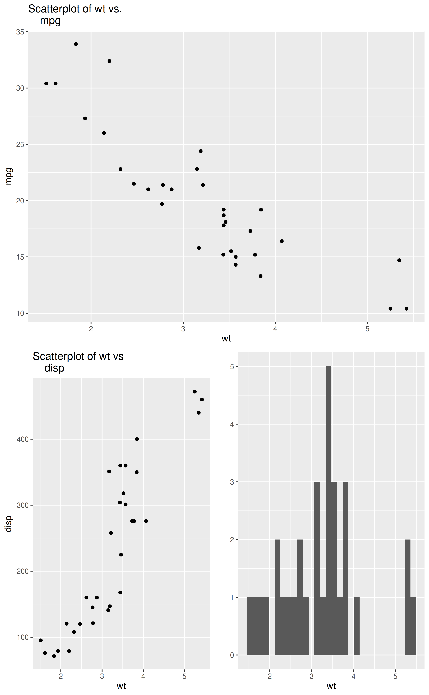

Arrange ggplot2 plots in an arbitrary grid
Details
The function takes arguments of the form `list(plot, row(s), column(s))` where `plot` is a ggplot2 plot object, and the rows and columns identify an area of the grid that you want that plot object to occupy. See http://stackoverflow.com/questions/18427455/multiple-ggplots-of-different-sizes
Examples
library(ggplot2)
p1 <- qplot(x=wt,y=mpg,geom="point",main="Scatterplot of wt vs.
mpg", data=mtcars)
#> Warning: `qplot()` was deprecated in ggplot2 3.4.0.
p2 <- qplot(x=wt,y=disp,geom="point",main="Scatterplot of wt vs
disp", data=mtcars)
p3 <- qplot(wt,data=mtcars)
lay_out(list(p1, 1:2, 1:4),
list(p2, 3:4, 1:2),
list(p3, 3:4, 3:4))
#> `stat_bin()` using `bins = 30`. Pick better value `binwidth`.
